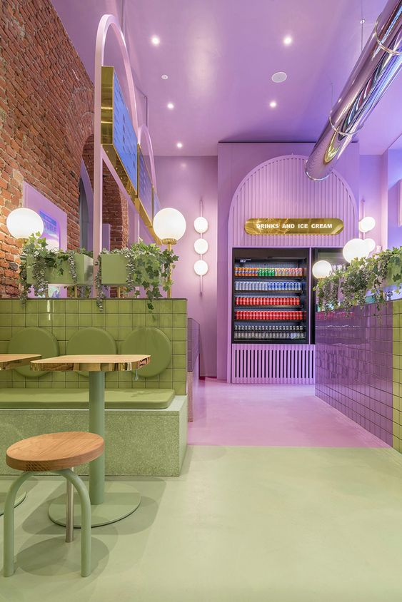
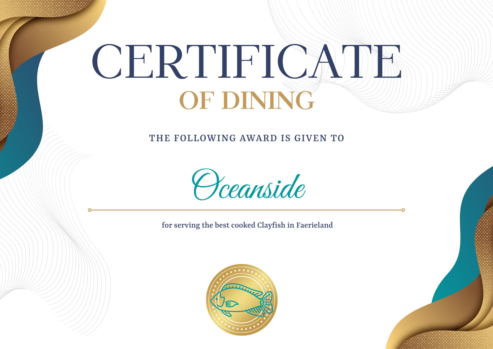
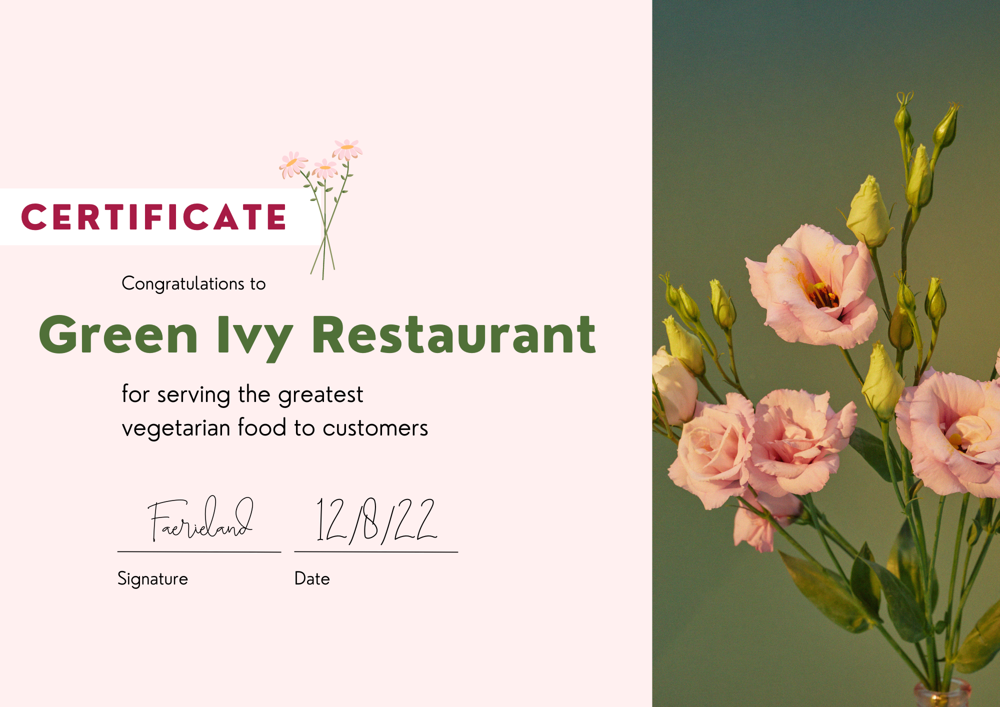
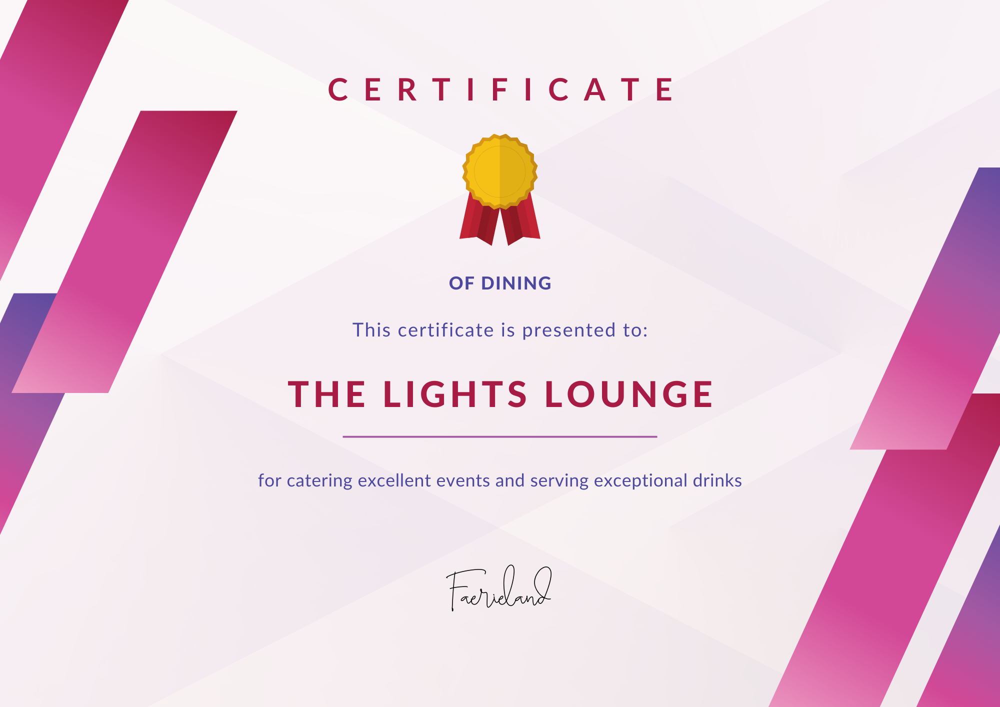
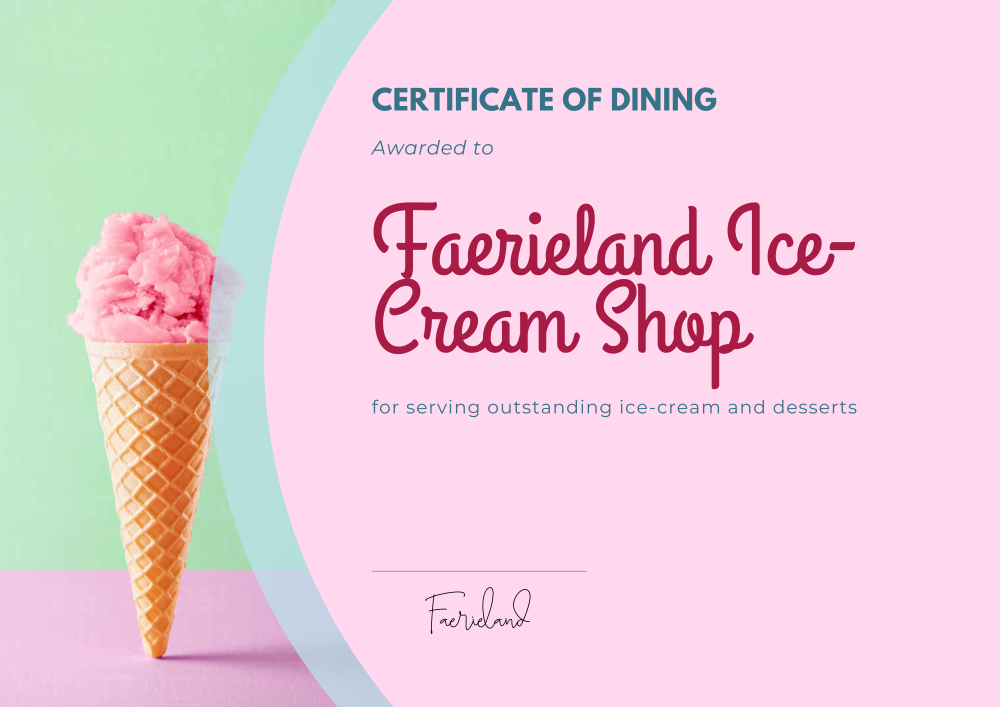

Award-winning Restaurants
Get a taste of Faerieland's special restaurants that have recieved many awards and positive customer feedback.
With unforgettable luxury dining experiences and fun restaurants of neon lights and verdant life, explore what they offer and look like.
The Royalla

Located in the luxury side of the city center beside the tulip gardens and near the angel's grove,
The Royalla is an award-winning restaurant of classical food and regal dining.
This restaurant has recieved numerous nominations and certificates of excellence throughout its long time in Faerieland,
especially for The Royalla's exquisite menu which includes its most popular dessert dish: red velvet cake laquered with soft cream cheese icing.
Oceanside

Surrounded by the sparkling teal oceans and the warm coral reefs of Faerieland,
Oceanside offers flavourful seafood cuisine and colourful cocktails that are loved by everyone.
They are known for their famous golden fish and chips that is served with juicy lemon, fresh parsely and an exclusive fish named the Clayfish which is only available within Faerieland waters.
Green Ivy Restaurant

This lush restaurant full of verdant life and abudant plants, the Green Ivy Restaurant is a vegetarian-friendly place and includes the best vegan food.
On the menu, they're known for their fantastic chopped salads and very favourited sweet potato tacos full of vibrant veggies.
The Lights Lounge

Bursting with life during the night in Faerieland, The Lights Lounge is a restaurant of fun, wildness and bright neon lights.
The variating menu includes notoriously acclaimed mocktails served with sweet fruit and granules of snow white sugar coated on the rim of their glass cups.
Faerieland Ice-Cream Shop

Want to experience Faerieland's best ice-creams? This place has it all with their flamboyant flavours of
ice-cream obtainable in many different flavours. Loved by all citizens and food critics, they're known for blue moon,
a luxurious ice-cream tinted a perfect teal blue and mixed with several flavours including fresh vanilla and blue raspberry.






The secret word is "fairy"!


 Home
Places to go
About
Home
Places to go
About